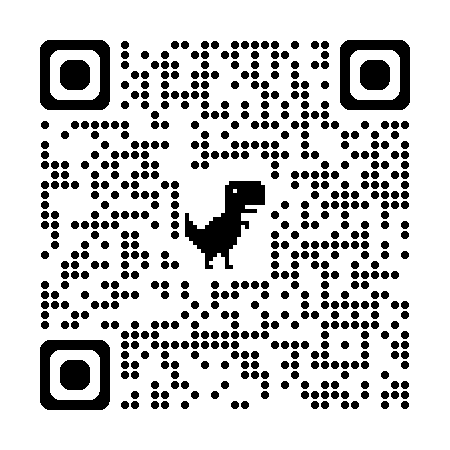

Inovační týmy státní správy
Jak posílit týmovou soplupráci bez složitých změn?
inovacnitymystatnispravy.cz , 23.04.2025
Proč jsme tady?
- silný zájem o téma inovací ve státní správě
- vloni touto dobou jsme finalizovali výzkum, který jsme si uvedli otázkou "Jak fungují týmy, které
úspěšně
transformují státní správu?"
- cílem bylo zjistit více o fungování inovativních týmů
- detaily za malý okamžik
- naše zpráva se dostala k Jindřichu Fryčovi pro jehož tým děláme 5.5. workshop
- ... jehož podobu si dnes chceme vyzkoušet
Kdo jsme?
- Výzkumný tým z KISK FF MUNI ve složení
- Veronika Dufek
- František Pfann
- Johana Šperlová
- Erik Vaněk
- Děkujeme Q Designers a 100 skupinám za prostor
Průběh workshopu
- úvodní část – představení týmu, očekávání a uvedení do výzkumu (teď)
- 16:00 – 16:30
- druhá část - 3 moderované skupinové diskuze
- 16:30 – 17:40
- Pauza 10 minut
- Vize lepší budoucnosti
- 17:50 – 19:00
- Závěrečné sdílení, uzavření a rozloučení + 🍺?
Očekávání
- S jakými dnes přicházíte očekáváními?
- Rádi bychom využili nástroj Mentimeter
- naskenujte si QR kód a zodpovězte jednu až tři odpovědi

Naše očekávání
- představit výsledky našeho šetření záživnou formou
- nastavit atmosféru podporující sdílení a vzájemnou inspiraci
- vytvořit prostor pro to to na chvíli zpomalit a zkusit nalézt "malá vítězství", která mohou odstartovat větší změny
- chceme, abyste si odnesli alespoň jednu malou věc do každodenního fungování vašeho úřadu
- Zažehnout 🔥 – nevyřešíme tady systémové problémy
Pravidla
- vzájemný respekt během diskuze
- nastavení mysli "žádný nápad není špatný"
- možná jen nepřišel ve správný moment
- nebojte se v jakýkoli moment ptát pokud něčemu nerozumíte
Otázky než začneme? 🙋
Detaily výzkumu

- inovacnitymystatnispravy.cz/
- Našim cílem bylo zjistit:
- Jak fungují týmy, které úspěšně transformují státní správu?
- Za jakých okolností tyto týmy vznikají?
- Co těmto týmům umožňuje státní správu transformovat?
12 zjištění
- Popisují fungování inovativních týmů, např.:
- "Vzájemná důvěra v týmu a prostor pro dělání chyb je důležitým podhoubím pro inovace"
- "Inovativní týmy využívají konceptu učící se organizace"
- "Silné mezilidské vztahy zvyšují efektivitu týmů"
Jak na to navazuje dnešní workshop?
- Vybrali jsme 3 nejvhodnější témata pro společnou diskuzi
- Formou moderované diskuze všechna rozebereme
- Následně budeme iniciativy na základě dnešní diskuze, které můžete zítra uchopit
Vybraná témata
- Nábor talentu, dlouhodobá motivace a udržení kvalitních lidí v týmu
- Učící se týmy, posilování důvěry a využívání principů "učící se organizace"
- Síťování a vytváření vztahů napříč organizacemi a odděleními
Cíle moderované diskuze
- hlouběji prozkoumat jednotlivá témata
- nalézt inspirace napříč úřady
- zkuste si sami v průběhu odpovědět na otázku "Jakou malou věci si můžu odnést do fungování mého úřadu?" či "Co nového bych mohl(a) vyzkoušet na základě nápadů ze společné diskuze?"
Průběh první části
- máme cca 60 minut na 3 moderované diskuze, každá na jiné téma
- u každého tématu je moderátor*ka z našeho týmu a facilituje diskuzi
- po 20 minutách diskuzi k téamatu ukončíme a přesuneme se na nové téma
Otázky než se do toho pustíme? 🙋
Pauza 10 minut
Vize lepší budoucnosti
Závěrečné sdílení
- Popsat krůček, přínos a cíl
- Kdo a co mi pomůže?
- Proč si myslíte, že to bude fungovat?
- Co ještě nevím, co by se mi mohlo hodit případně co mi pro změnu chybí?